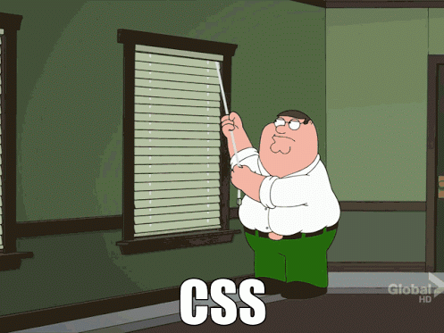

Your browser doesn't support the features required by impress.js, so you are presented with a simplified version of this presentation.
For the best experience please use the latest Chrome, Safari or Firefox browser.
The Fountain of Speed:
Simple Tricks to Optimize your HTML and CSS
Who am I?
Jennifer Hageman
Interactive Developer
jhageman@egov.com
Twitter: @JustJenFelice
Github: JustJenFelice
This presentation's code is available at:
https://github.com/JustJenFelice/fountain-of-speed
Your users will give your page
2 seconds
to load
After 3 seconds
up to
40% will simply
leave
(http://www.gomez.com/pdfs/wp_why_web_performance_matters.pdf
http://www.websiteoptimization.com/speed/tweak/psychology-web-performance/)
Your window of opportunity is small
So...
What do wedo?
Where do westart?
GitHub Case Study
Massive performance problems lead GitHub to reevaluate their entire front-end codebase.
- + 80% of pageload time being caused by style recalculation
- Style recalculation alone was adding 28.16 sec. to load times that averaged over 30 seconds
Published December, 2012
Browser Voodoo Magic

Render Process

The most important thing to know is the browser:
- First parses the HTML to identify the DOM elements
- Then constructs the render tree to identify the structure of the DOM as the elements relate to each other
- Then the browser begins to identify what styles apply to the various elements of the DOM and constructs the Render Tree with that information
- The browser then begins to actually layout the document framework with that information, much like the skeleton of the page
- Finally, the browser begins to paint pixels onto the tree
- BUT IT DOESN'T END THERE
- The browser will often times be asked to recalculate styles, which starts the process all over again
Causes of Style Recalculation
- Manipulating the DOM
- Hiding elements using display: none; and visibility: hidden;
- CSS animations
- User Actions
- Dynamic Elements
So...is style recalculation bad*?
The Nightmare

Unnecessary tag identifiers
ul
#main-nav li,
li
.menu {
color: #333;
}
#main-nav li,
.menu {
color: #333;
}
Ancestors
html div table tr
td {
margin: 0;
}
Universal Selectors &
Unqualified Selectors
* {
margin: 0;
}
[class^="mini-icon-"] {
background: url('../img/logo.png') no-repeat;
background-position: -200px -60px;
}
Selector Chaining
.big .hairy
.deal {
margin: 0;
}
.big-hairy-deal {
margin: 0;
}
Important - when you do chain, the order of chained classes determines where the browser will index the rule.
Chained Selector Handling
.big .hairy .deal { color: #333; } is indexed under class rules key .biginput[type=text].error { color: #900; } is indexed in tag rules, but input.error[type=text] { color: #900; } is indexed under class rules key .error.big#hairy-deal { color: #333; } is indexed under class rules key .big but #hairy-deal.big { color: #333; } is indexed under ID rules key #hairy-deal
HTML
Unnecessary <div>s
<tr>
<td class="line_number"><a id="L1L5" href="#L1L5">5</a></td>
<td class="line_number"><a id="L1R7" href="#L1R7">7</a></td>
<td width="100%">
<div class="add-bubble"></div>
<pre><div>
+this is a line in the diff</div>
</pre>
</td>
</tr>
<tr>
<td class="line_number"><a id="L1L5" href="#L1L5">5</a></td>
<td class="line_number"><a id="L1R7" href="#L1R7">7</a></td>
<td width="100%">
<div class="add-bubble"></div>
<pre>+this is a line in the diff</pre>
</td>
</tr>
Unnecessary <a>s
<tr>
<td class="line_number"><a id="L1L5" href="#L1L5">
5</a>
</td>
<td class="line_number"><a id="L1R7" href="#L1R7">
7</a>
</td>
<td width="100%">
<div class="add-bubble"></div>
<pre>+this is a line in the diff</pre>
</td>
</tr>
<tr>
<td class="line_number linkable-line-number">5</td>
<td class="line_number linkable-line-number">7</td>
<td width="100%">
<div class="add-bubble"></div>
<pre>+this is a line in the diff</pre>
</td>
</tr>
Magical <b> element
<tr>
<td class="line_number linkable-line-number">5</td>
<td class="line_number linkable-line-number">7</td>
<td width="100%">
<div class="add-bubble"></div>
<pre>+this is a line in the diff</pre>
</td>
</tr>
<tr>
<td class="line_number linkable-line-number">5</td>
<td class="line_number linkable-line-number">7</td>
<td width="100%">
<b class="add-bubble"></b>
<pre>+this is a line in the diff</pre>
</td>
</tr>
Other Best Practices
- Avoid inline images if possible
one inline image can increase your pageload by as much at 25%
- Use image sprites
Decrease number of HTTP requests by ~20%
Cut total pageload time by anywhere from ~16% to ~35%
- Optimize images
GitHub Case Study - Outcome
Pageload Impact
- Removing unnecessary <div>s and <a>s = 37% render speed improvement
- Use of <b> to replace <div> = 3.5% render speed improvement
Go Forth and Code Responsibly
- Set and maintain code quality standards and guidelines
- Document your code
- Optimize your images
- Do Performance Audits and Track those results
- USE CHROME DEVELOPER TOOLS
References
- http://www.html5rocks.com/en/tutorials/internals/howbrowserswork/
- https://speakerdeck.com/jonrohan/githubs-css-performance
- http://alistapart.com/article/improving-ux-through-front-end-performance
- https://developers.google.com/speed/docs/best-practices/rendering
- https://developer.mozilla.org/en-US/docs/Web/Guide/CSS/Writing_efficient_CSS
- http://writegoodcode.com/